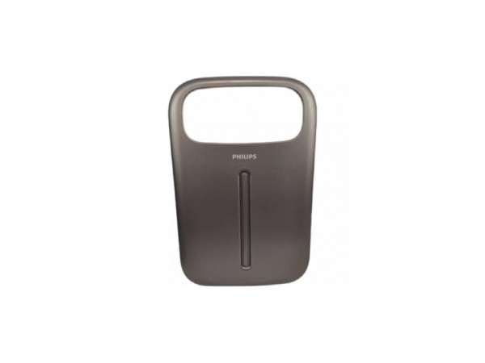
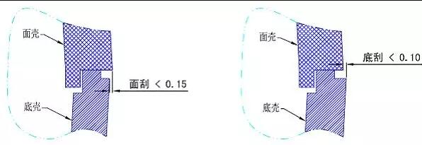
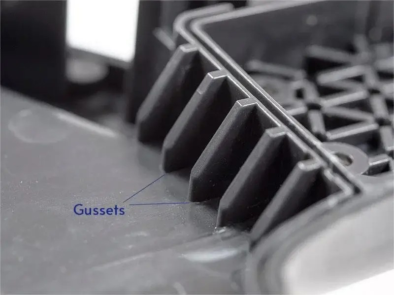
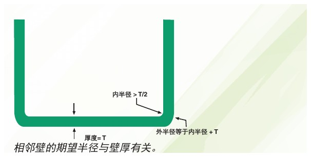
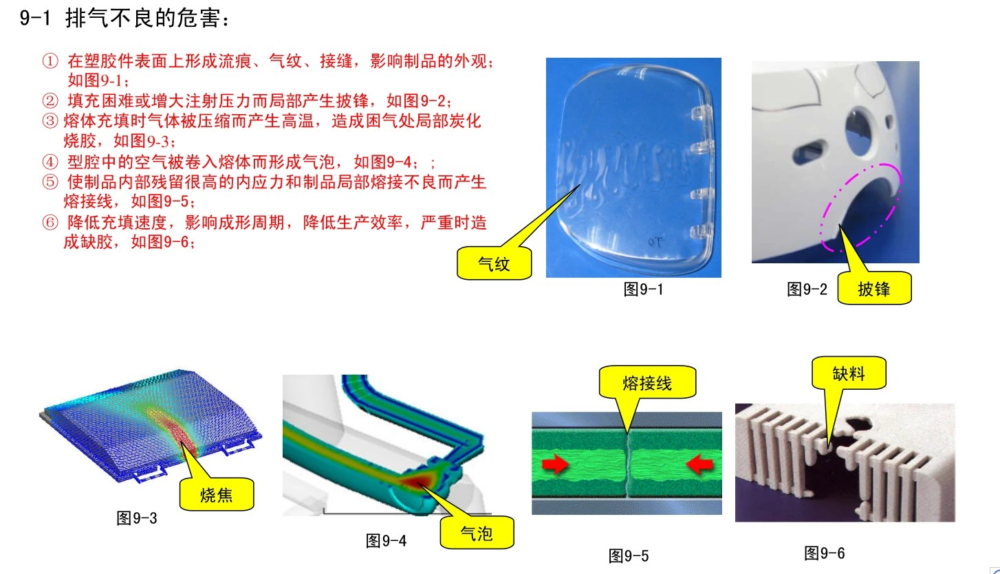
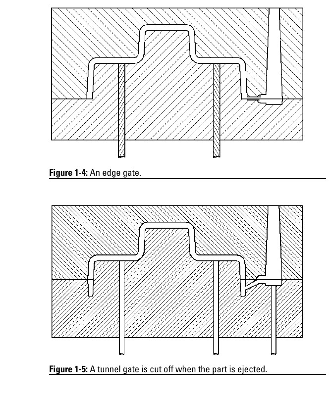

01
壳体与外观件
外壳拆分、外观件固定、壁厚/加强筋、开孔、覆面等「看得见的结构」。 本类共 26 篇。
开孔与网罩 4 篇

EMI 蜂窝波导通风板：孔径、深度与截止频率
蜂窝波导通风板用一排排短金属管来通风：孔格在截止频率以下像「截止波导」那样把电磁能量指数衰减掉，空气却还能从高开孔率的蜂窝里通过。屏蔽主要靠孔径（决定截止频率）和深度（决定衰减量），并且和风量对着干——孔越小、越深，屏蔽越好、风阻越大。它不是防雨百叶，也不能只用外壳上的薄孔来代替。

外壳散热通风口与防雨百叶：开孔率、进出风与滴水路径
产品外壳要散热又要挡雨，关键不是把孔开得看起来很多，而是空气真正能走的「自由面积」、进风与出风不要短路，以及叶片或疏水槽把水引走。几何开孔率不等于自由面积：AMCA 把自由面积定义为空气能通过的最小截面，还要扣掉叶片投影重叠；永锢给铝壳的进风孔、上下进出和 IP 分层，是面向工控盒、户外机柜这类产品外壳的做法，不能把大楼百叶的尺寸直接抄到消费电子上。

注塑喇叭网罩：开孔率、孔径孔距与脱模
外壳上的喇叭网罩要同时挡手、好看和让声音过去：决定听感的首先是开孔率，其次才是孔径、孔距和排布。SolidVents 把圆孔开孔率写成公式，并建议扬声器正前方做到 30%–40% 或更高；落到注塑件上，这些微孔要靠细型芯针成型，怡讯模具文指出孔径常见 0.5–1.5 mm，细针易弯、易短射、易粘模拉毛，要从模具钢材、排气、顶出和材料流动性一起解决。本篇不讨论网布加防水透声膜的声学叠层。

注塑碰穿与插穿：用封胶面成型通孔或侧孔，避免侧抽
与开模方向一致或能改到可由开模方向成型的孔，不必上滑块或斜顶：用前、后模仁正面相碰做成通孔（碰穿/靠破），或用带斜度的侧面相互插入做成侧孔（插穿）；封胶面必须有斜度和足够的封胶宽度，swcreo 与亚洲模具展都把上下端尺寸差写成单边要大于 0.1 mm，中正通还给插穿导向写出了 A ≥ 5°、H ≥ 2.5 mm 和最小封胶距离 1.0 mm。
装饰件/覆面 3 篇

IMD与IML模内装饰：圆角、翻边与浇口避开图案
把装饰膜和塑料壳体一次注塑在一起时，壳体的圆角、边缘拔模、翻边深度和胶厚都要迁就膜片的拉伸与贴合，浇口还要避开图案以免冲刷油墨；它解决的是膜片对结构的约束，不是喷漆或双色注塑的选色与拆件。

咬花（晒纹）与拔模角：每 0.025 mm 纹深加 1°
外观件侧壁咬花后，纹路的凹凸会在脱模时「刮」侧壁，所以要按纹深加拔模角。赫兹工业设计的经验公式：基础 1–1.5° + 纹深 ÷ 0.025 mm × 1°，并提醒 VDI 3400 纹号对应的是 Ra，不是深度（实际峰谷深度约为 Ra 的 4–6 倍）；纹理厂 Mold-Tech 则在技术数据表里写明旧规则「每 25 µm 纹深 1.5°」已不再适用，推荐每 12.5–15 µm 纹深 1°，且包紧钢料的面要 2–3 倍。

壳体凸字与凹字LOGO：字高、笔画宽和凸凹拔模的差异
注塑壳体上的品牌、型号和法规文字，是做在表面上的微型凸起或凹陷，必须按成型特征来设计：要有最小字高和笔画宽，也要给字母侧壁留拔模。首饰模具建议凸字高 0.15–0.30 mm、凹字深 0.15–0.25 mm，笔画宽不小于 0.25 mm；CN Mould 把凸字高度下限写成至少 0.2 mm，并建议文字拔模大于 10°；Koreben 则给出另一组更偏「可读性」的数字，以及凸字与凹字不同的拔模。它和 咬花（晒纹）与拔模角：每 0.025 mm 纹深加 1° 都涉及表面和斜度，但本篇是成型文字和标识的几何，不是皮纹本身。
免工具外壳 1 篇
隐藏紧固 4 篇
PS5 免工具侧板与 DualSense 隐藏螺丝
PS5 两块白色外板「抬起再滑动」即可免工具取下，直接露出 M.2 扩展位、风扇和可吸尘的集尘口；DualSense 手柄则把 4 颗螺丝藏在可卡扣拆下的饰圈和 L1/R1 键下面，外观零可见螺丝。

塑料外壳止口与扣位：间隙参数与三个翻车案例
面壳与底壳之间用「止口」做精定位、用「扣位」做受力连接：东莞赫兹工业设计的结构工程师给出止口单边间隙 0.10–0.15 mm、扣位根部 R ≥ 0.5 倍壁厚等经验值，并用三个真实翻车（R 角太小断扣、忽略蠕变扣不紧、扣位间距过大中间鼓缝）说明每个参数的来历；B 站「鸿图教育」专栏补充了止口方向、面刮/底刮和模具侧（滑块/斜顶）的约束。

注塑螺丝柱（Boss 柱）：壁厚比 0.6 分水岭与自攻底孔公式
螺丝柱开裂和缩水是同一个问题的两面：柱壁厚与主壁厚之比约 0.6 是分水岭，偏薄锁螺丝就裂、偏厚外观面缩坑。赫兹工业设计给出 M2.5 自攻柱的整套经验值（柱壁 0.8–1.0 mm、外径 4.2–4.5 mm、底孔 = 螺丝外径 − 0.8 × 螺距 ≈ 2.0–2.1 mm、柱高 ≤ 3 × 外径、根部 R ≥ 0.25 mm、拔模 0.5–1°），并用一个手持设备改模实例验证：比例从 0.78 调到 0.55，裂纹消失。Protolabs、Eurotec 给出的壁厚比是 40%–60% / ≤ 50%。

金属嵌件注塑：周围壁厚、滚花止转与开裂风险
模内金属嵌件要靠周围足够的塑料壁厚消化金属与塑料的收缩差，用滚花、环槽、切口等伏陷结构止转和抗拉拔，并避开锐边和直冲浇口，否则冷却残余应力会在嵌件周围开裂，或螺母被扭转打滑。
壁厚与加强筋 8 篇

三角筋与角撑（Gusset）：斜撑高侧壁或凸台，而不是再做一面等厚壁
三角筋（角撑、gusset）是连接高侧壁或凸台与底板的斜向三角形（或楔形）支撑，用来把根部弯矩分散到更大的区域，而不是再立一面与主壁等厚的「第二面壁」。厚度仍按主壁的一部分来取（Envalior 图：A = 0.5T–0.7T；RTP 总图标加强角撑板为 T/2；Protolabs：支撑材料遵守 40%–60%），根部要有圆角，两侧要有拔模，并留出冷却和排气空间。本篇对照已有加强筋篇和 Boss 柱篇：主角是斜撑几何，不是长条筋比例，也不是柱壁厚与底孔。

塑料件加强筋设计：厚度、高度与间距比例
注塑件要提高刚度，应该「矮而多」地加筋而不是加高：B 站专栏《塑料产品结构设计基础知识——加强筋的设计》给出筋厚 0.4–0.6 t（t 为壁厚）、筋高 ≤ 3 t、筋间距 ≥ 4 t、斜度 > 1.5° 等比例规则，并分别讲了箱体转角、螺丝柱和支撑面的加强筋做法。

注塑件翘曲：壁厚不均与筋不对称使整件弯向冷却较慢的一侧
注塑件翘曲是整件因冷却和收缩不对称而弯曲或扭转，不是厚壁背后那一点局部凹陷。维林把成因写成壁厚不均、加强筋布局不对称或冷却通道不均匀造成的差异收缩；RTP 要求避免壁厚变化过大，并「保持公称壁两侧加强筋的平衡，以免出现不均匀收缩，导致翘曲」。OriNovate 和 3D Systems 进一步指出：零件会弯向冷却较慢的一侧（也就是模具较热的一侧）。它和 注塑缩痕：厚壁背面凹陷、减胶坑与保压边界 常一起出现，但本篇的对象是整件变形。

注塑内圆角与外圆角：内半径至少 0.5 t、外半径等于内半径加壁厚
注塑件转角要把内圆角和外圆角一起设计：内半径至少约为公称壁厚 t 的一半，外半径取「内半径 + t」，才能在拐角处保持壁厚不变。只倒内角或只倒外角，会把拐角做薄或做厚，既是应力集中点，也是熔体的滞流点。本篇讲转角半径关系，不是加强筋厚度，也不是缩痕减胶。
注塑均匀壁厚与厚薄渐变：相邻壁厚比与过渡段长度
注塑件应尽量保持均匀壁厚；功能上必须厚薄并存时，不要做成台阶式突变，而要用有长度控制的平滑过渡（赫兹：相邻壁厚变化比不宜超过 1:1.5，过渡段长度不小于壁厚差的 3 倍；CoreLMould 同样给出「约 3 倍壁厚差」），并按所选材料落在推荐壁厚区间内。本篇讲的是过渡几何和材料壁厚窗，不是缩痕如何形成、也不是减胶坑怎么挖。
注塑螺丝柱（Boss 柱）：壁厚比 0.6 分水岭与自攻底孔公式
螺丝柱开裂和缩水是同一个问题的两面：柱壁厚与主壁厚之比约 0.6 是分水岭，偏薄锁螺丝就裂、偏厚外观面缩坑。赫兹工业设计给出 M2.5 自攻柱的整套经验值（柱壁 0.8–1.0 mm、外径 4.2–4.5 mm、底孔 = 螺丝外径 − 0.8 × 螺距 ≈ 2.0–2.1 mm、柱高 ≤ 3 × 外径、根部 R ≥ 0.25 mm、拔模 0.5–1°），并用一个手持设备改模实例验证：比例从 0.78 调到 0.55，裂纹消失。Protolabs、Eurotec 给出的壁厚比是 40%–60% / ≤ 50%。

薄壁电子外壳：壁厚区间与流长比 L-t
电子外壳一旦把壁厚做到约 0.5–1.5 mm 甚至更薄，决定能否充满的不是「再查一张通用壁厚表」，而是流动距离与壁厚之比 L/t：比例过高就要用多浇口缩短流长、提高射速和压力，并在大平面上用局部加厚引导流动。
金属嵌件注塑：周围壁厚、滚花止转与开裂风险
模内金属嵌件要靠周围足够的塑料壁厚消化金属与塑料的收缩差，用滚花、环槽、切口等伏陷结构止转和抗拉拔，并避开锐边和直冲浇口，否则冷却残余应力会在嵌件周围开裂，或螺母被扭转打滑。
分型与拔模 6 篇
咬花（晒纹）与拔模角：每 0.025 mm 纹深加 1°
外观件侧壁咬花后，纹路的凹凸会在脱模时「刮」侧壁，所以要按纹深加拔模角。赫兹工业设计的经验公式：基础 1–1.5° + 纹深 ÷ 0.025 mm × 1°，并提醒 VDI 3400 纹号对应的是 Ra，不是深度（实际峰谷深度约为 Ra 的 4–6 倍）；纹理厂 Mold-Tech 则在技术数据表里写明旧规则「每 25 µm 纹深 1.5°」已不再适用，推荐每 12.5–15 µm 纹深 1°，且包紧钢料的面要 2–3 倍。

型芯与型腔拔模差：收缩抱紧型芯，让塑件留在动模顶出侧
塑料冷却时会收缩并抱紧型芯（公模、通常在动模 / B 面），开模后制件必须留在有顶出系统的那一侧，而不能跟着型腔（母模、常为定模 / A 面外观侧）被带走。做法是让型腔侧斜度大于型芯侧——Firstmold 的规则是模腔拔模角一般比模芯大 0.5°——使制件先脱离型腔、继续留在型芯上，再由顶针推出。本篇讲留模和两侧斜度差，不是按咬花纹深加角度。
塑料外壳止口与扣位：间隙参数与三个翻车案例
面壳与底壳之间用「止口」做精定位、用「扣位」做受力连接：东莞赫兹工业设计的结构工程师给出止口单边间隙 0.10–0.15 mm、扣位根部 R ≥ 0.5 倍壁厚等经验值，并用三个真实翻车（R 角太小断扣、忽略蠕变扣不紧、扣位间距过大中间鼓缝）说明每个参数的来历；B 站「鸿图教育」专栏补充了止口方向、面刮/底刮和模具侧（滑块/斜顶）的约束。

注塑分型面与阶梯封胶斜度：最大轮廓留后模，shut-off 至少 5–7°
分型面应放在塑件脱模方向的最大轮廓（或棱线）上，并尽量让塑件留在带顶出的后模、夹线避开外观面；当分型必须做成高低台阶时，连接不同高度的封胶面（shut-off）不能与开模方向平行，Envalior 与 Fictiv 都把该面的斜度写成推荐约 7°、最小 5°，中正通则按台阶高度另给了一组更细的 α 值。
注塑碰穿与插穿：用封胶面成型通孔或侧孔，避免侧抽
与开模方向一致或能改到可由开模方向成型的孔，不必上滑块或斜顶：用前、后模仁正面相碰做成通孔（碰穿/靠破），或用带斜度的侧面相互插入做成侧孔（插穿）；封胶面必须有斜度和足够的封胶宽度，swcreo 与亚洲模具展都把上下端尺寸差写成单边要大于 0.1 mm，中正通还给插穿导向写出了 A ≥ 5°、H ≥ 2.5 mm 和最小封胶距离 1.0 mm。

注塑顶针布置与顶白：顶在筋柱刚性区，避开外观面并消除真空吸附
顶针要顶在柱位、筋根、厚壁等刚性区，并尽可能用大直径或司筒、扁顶、推板把压强摊开，外观面和装配面避开；顶白往往不只是「顶出力太大」，还来自斜度不足、顶出不同步，以及深腔型芯与塑件之间的真空吸附。
外观缺陷 7 篇
注塑件翘曲：壁厚不均与筋不对称使整件弯向冷却较慢的一侧
注塑件翘曲是整件因冷却和收缩不对称而弯曲或扭转，不是厚壁背后那一点局部凹陷。维林把成因写成壁厚不均、加强筋布局不对称或冷却通道不均匀造成的差异收缩；RTP 要求避免壁厚变化过大，并「保持公称壁两侧加强筋的平衡，以免出现不均匀收缩，导致翘曲」。OriNovate 和 3D Systems 进一步指出：零件会弯向冷却较慢的一侧（也就是模具较热的一侧）。它和 注塑缩痕：厚壁背面凹陷、减胶坑与保压边界 常一起出现，但本篇的对象是整件变形。

注塑喷射纹（Jetting）：浇口冲入开阔型腔形成蛇形流
喷射纹出现在浇口附近：熔体高速穿过狭窄浇口后冲进开阔型腔，却没有立刻碰到模壁，于是像一条蛇一样在空腔里折叠前进，在表面留下波浪状或「老鼠尾」痕迹，并在折叠接触处形成小接缝；对策首先是让熔体一进型腔就打到侧壁、筋或对面钢料，或改用重叠、潜入、护耳、扇形浇口，工艺上只能作为辅助。

注塑困气烧焦与排气槽：最后充填处开浅槽，筋交叉用镶件或排气顶针
型腔里的空气和熔体释放的气体如果排不出去，会在最后充填处被压缩发热，轻则气纹、缺料，重则把塑料烧焦发黑（淘小铺称为与柴油机点火同一类的绝热压缩）；排气要开在分型面的最后充填处，深筋、柱底和筋交叉处则靠镶件拼缝、排气顶针或减薄筋根把气赶走，槽深必须按材料来，而不能做成产品外壳上的通风口或百叶。

注塑浇口类型与位置：侧浇口、潜伏浇口与点浇口对痕迹和对面结构的影响
浇口决定熔体从哪里进入型腔，也就决定了外观面上的浇口残痕、对面或末端可能出现的气纹与冲击，以及保压能否走到厚壁。侧浇口加工简单但侧面留痕，潜伏式与点浇口可自动切断、痕迹更小，但压力损失和浇口尺寸限制不同。本篇讲浇口类型与位置，对照已有「注塑熔接痕」篇——熔接痕可以是浇口布置的后果，但不是本篇要写的形成机理。

注塑熔接痕：位置由浇口定、深浅由前锋温差定
熔接痕（又叫熔接线、夹水线、夹水纹）是两股料流前锋相遇时界面没有完全熔合留下的线。赫兹工业设计把它拆成两个独立问题：**位置**由浇口和型腔几何决定，浇口挪 10 mm，痕就换一条边，调机挪不动它；**深浅**由前锋温差、料温、模温、流速和排气决定，温差 < 20 ℃ 基本看不见，> 40 ℃ 是抛光和喷涂都盖不住的暗线。B 站专栏「模具知识 11」给出的 Moldflow 判据更严：前锋温差 > 10 ℃ 熔接线就很明显。它还列出结构侧的手段：在汇合处加骨位，把痕引过去。

注塑缩痕：厚壁背面凹陷、减胶坑与保压边界
缩痕是厚壁区、粗筋或实心螺丝柱背面，因局部多料、冷却收缩不均而把 A 面拽出的凹陷。设计上应先把多余体积减胶（core-out）、用筋代替实心堆积，并让邻壁厚度落在推荐区间；工艺上再靠保压补缩，而不是把壁厚和筋再加厚。
注塑顶针布置与顶白：顶在筋柱刚性区，避开外观面并消除真空吸附
顶针要顶在柱位、筋根、厚壁等刚性区，并尽可能用大直径或司筒、扁顶、推板把压强摊开，外观面和装配面避开；顶白往往不只是「顶出力太大」，还来自斜度不足、顶出不同步，以及深腔型芯与塑件之间的真空吸附。
注塑 2 篇
注塑浇口类型与位置：侧浇口、潜伏浇口与点浇口对痕迹和对面结构的影响
浇口决定熔体从哪里进入型腔，也就决定了外观面上的浇口残痕、对面或末端可能出现的气纹与冲击，以及保压能否走到厚壁。侧浇口加工简单但侧面留痕，潜伏式与点浇口可自动切断、痕迹更小，但压力损失和浇口尺寸限制不同。本篇讲浇口类型与位置，对照已有「注塑熔接痕」篇——熔接痕可以是浇口布置的后果，但不是本篇要写的形成机理。
注塑缩痕：厚壁背面凹陷、减胶坑与保压边界
缩痕是厚壁区、粗筋或实心螺丝柱背面，因局部多料、冷却收缩不均而把 A 面拽出的凹陷。设计上应先把多余体积减胶（core-out）、用筋代替实心堆积，并让邻壁厚度落在推荐区间；工艺上再靠保压补缩，而不是把壁厚和筋再加厚。